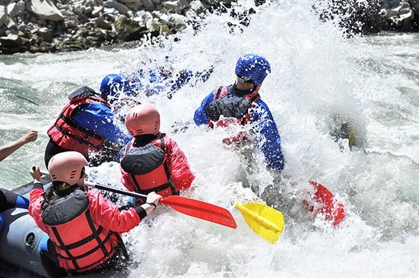

Welcome!
At Splash White Water Rafting, whether you are a first-time rafter or a seasoned thrill-seeker, we strive to create moments of excitement, challenge, and pure adrenaline that leave a lasting impact.

At Splash White Water Rafting, whether you are a first-time rafter or a seasoned thrill-seeker, we strive to create moments of excitement, challenge, and pure adrenaline that leave a lasting impact.
What started as a simple love for the river became a passion-driven adventure company. Splash White Water Rafting was founded by a group of thrill-seekers who grew up navigating wild waters. Craving the rush of crashing waves and a deep respect for nature, they turned their expertise into a mission—to share the magic of white-water rafting with others.